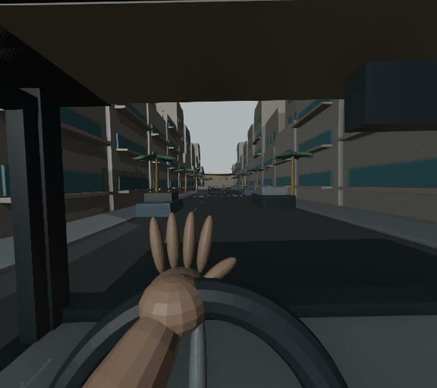
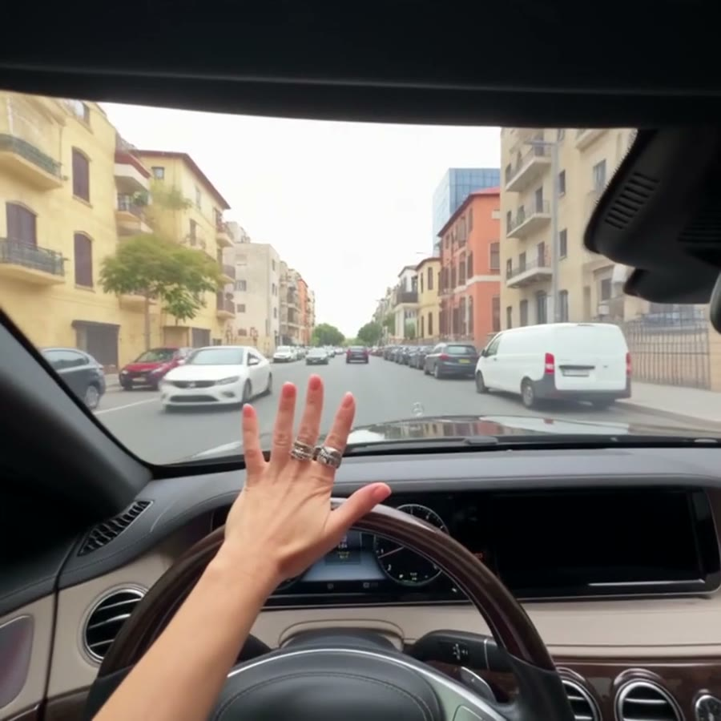
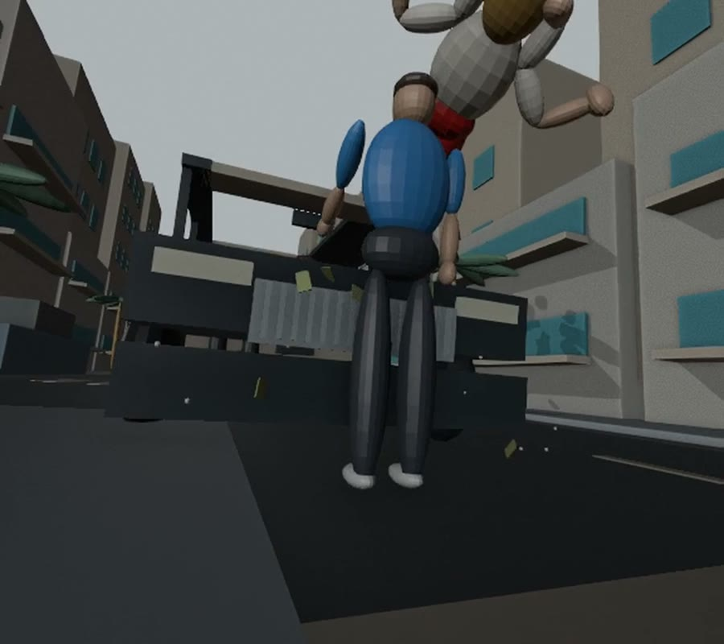
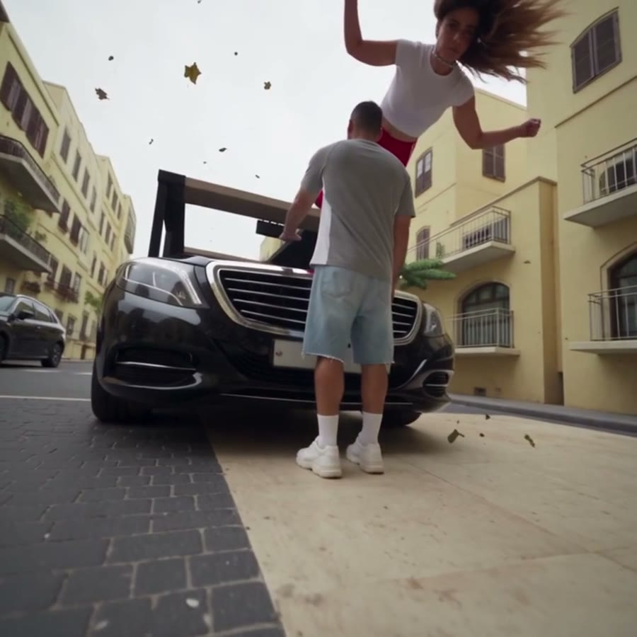
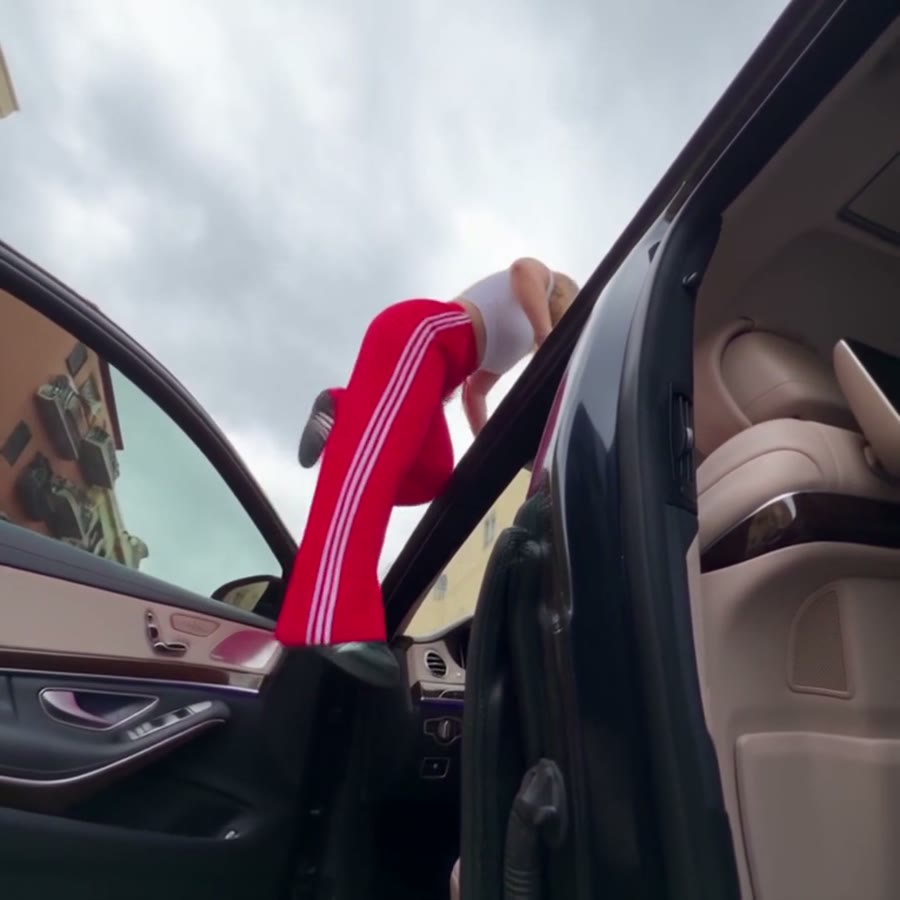
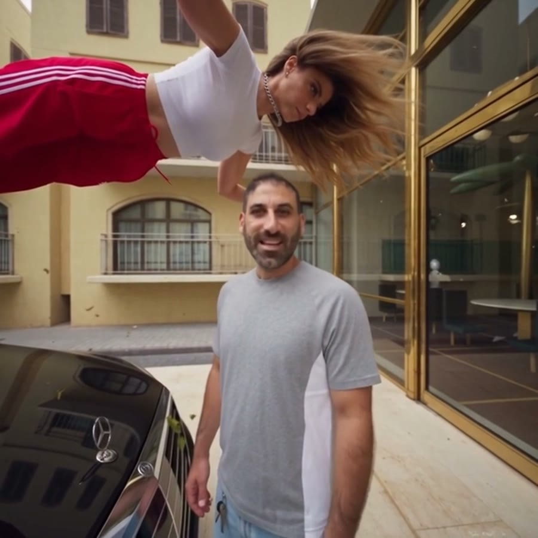

כל שנייה בסרטון הזה תוכננה קודם בבלנדר: איפה הטלפון, מי יושבת איפה, מה כל יד עושה. Claude בנה את הסצנה, Seedance 2.5 בקולבו הפך אותה לאמיתית, ובסוף הזמן נעצר. הנה כל השלבים, עם כל הפרומפטים.
בסרטון כזה הכול תלוי בתזמון: מתי הטלפון עובר, מתי היא עולה לגג, מתי הרכב בולם. כשזה מתוכנן בבלנדר, ה-AI לא מנחש. הוא רק הופך את הבובות לאנשים.
כותבים במפורש שהטלפון שמצלם אף פעם לא מופיע בפריים. אחרת מופיע טלפון ביד של מישהי.
אם בבלנדר הבלימה מתחילה ב-0.8, גם בפרומפט כותבים 0.8. מספר אחר מבלבל אותו.
הפריים האחרון של כל שוט נכנס כתמונה לשוט הבא. ככה הבגדים, הרחוב והאור לא קופצים בין השוטים.
בלנדר חינמית, מורידים מהאתר הרשמי. את החיבור ל-Claude עושה BlenderMCP, תוסף חינמי. מבקשים מ-Claude לחבר את עצמו ולהסביר מה ללחוץ.
תחבר את עצמך לבלנדר דרך BlenderMCP (https://github.com/ahujasid/blender-mcp). 1. תתקין את מה שצריך בצד שלך ותוסיף את השרת של blender-mcp להגדרות שלך. 2. תסביר לי צעד אחרי צעד איך מתקינים את התוסף בתוך בלנדר ואיך לוחצים Connect. 3. כשהחיבור עובד, תבדוק שאתה רואה את הסצנה שפתוחה אצלי ותגיד לי מה יש בה.
הסוד של הסרטון הזה: אין מצלמה חיצונית. הטלפון עובר מיד ליד, ו-Claude בונה בבלנדר בדיוק איפה הוא נמצא בכל שנייה, מי יושבת איפה ומה כל יד עושה. ככה ה-AI לא צריך לנחש כלום.
תבנה לי בבלנדר סצנה של 14 שניות, יחס 1:1, 24 פריימים לשנייה. המקום: רכב שחור עם הגה בצד שמאל, נוסע ברחוב עירוני. שלוש בנות: הנהגת מקדימה משמאל, חברה מקדימה מימין, וחברה מאחורי הנהגת. כל אחת בובה בצבע אחר. המצלמה היא טלפון ביד, לא מצלמה חיצונית. עדשה רחבה (17 מ״מ), תנועות קטנות של יד, אף פעם לא עוברת דרך מושב או ראש. מה קורה בכל שנייה: 0-0.7 הטלפון ביד של הנהגת, מסתכל למטה על ההגה, ואז עולה לכביש. 0.7-2.1 היד הפנויה שלה מונחת שטוחה על ההגה והאצבעות מורמות, כאילו "תראו, ביד אחת". 2.2-3.3 סיבוב ימינה לחברה שמקדימה, היא צוחקת. 4.0-5.0 סיבוב מהיר אחורה: החברה מאחור מצביעה באצבע אחת לכביש. 7.2-7.9 הנהגת מושיטה את הטלפון אחורה. 8.4-8.6 היד הפתוחה של החברה מאחור עולה מהברכיים ועוטפת את העדשה לרגע. 8.7-9.9 התמונה צונחת לרצפה ולקונסולה, ואז מבט נמוך קדימה בין המושבים. 11.3-12.6 הנהגת מסתובבת ומרימה אגודל. 12.6-13.2 החברה מקדימה תופסת את ההגה. 13.2-14.0 הנהגת פותחת את הדלת וקמה מהמושב. לפני שאתה מרנדר תבדוק: שהמצלמה לא עוברת דרך שום דבר, שאף יד או גוף לא נכנסים לתוך הרכב, ושכל סיבוב מהיר לוקח לפחות שלוש עשיריות שנייה. תרנדר עם Workbench לקובץ MP4 ותראה לי.


את הסיום בונים באותה שיחה: הרכב נעצר צמוד ליד, והזמן נעצר. בבלנדר "הקפאה" זה פשוט: מפסיקים להזיז הכול חוץ מהמצלמה ומהדמות שמדברת. בסרטון זה נראה כמו קסם.
תמשיך את אותה סצנה. תוסיף לי סיום של 6 שניות ברחוב: - בובה כחולה (אני) עומדת על המדרכה מול כניסה של מלון. - הרכב טס אליה עם הבובה האדומה עומדת על הגג, ידיים פרושות. - בשנייה 0.45 הבובה הכחולה מרימה יד קדימה. - 0.8 עד 1.45 בלימה חזקה, האף של הרכב צולל, והבלימה זורקת את הבובה האדומה קדימה. - 1.45 הזמן נעצר: הרכב נעצר צמוד לכף היד, הבובה האדומה קפואה באוויר מעל מכסה המנוע, ואבק ועלים קפואים באוויר. - 1.45 עד 3.5 רק המצלמה זזה: היא מתקרבת לבובה הכחולה מהצד ועולה לגובה הפנים. - 3.5 עד 6 הבובה הכחולה מורידה את היד, מסתובבת למצלמה ומדברת עם הידיים. המצלמה מתחילה נמוכה מאחורי הבובה הכחולה. תבדוק שאף חלק לא עובר דרך הרכב, ותרנדר לי MP4.


בקולבו מכינים רפרנסים: תמונת פנים ותמונת לבוש לכל דמות, תמונה של הרכב ותמונה של הרחוב. לדמות שלכם משתמשים בתמונה אמיתית שלכם, כדי שהפנים יישארו שלכם. בפרומפט כותבים מה לקחת מכל תמונה ומה לא.

ב-Seedance 2.5 מעלים את הסרטון מבלנדר ואת התמונות, ומדביקים את הפרומפט. השניות בפרומפט הן בדיוק השניות בבלנדר. שוט ארוך מחלקים לשוטים של עד 14 שניות.
Photoreal handheld smartphone footage, one continuous real-time take, square frame, overcast daylight. @Video1 is a Blender guide: copy its camera path, lens height, horizon roll, timing, seat positions and every hand and body action exactly, second by second. Turn its grey mannequins into real people, its blocks into a real car interior and a real street. The recording phone IS the lens: never show a phone, a second phone, a screen, or the face of whoever holds the lens. CAR: black left-hand-drive Mercedes S-Class (@Image7 for the body only), cream leather seats, dark wood trim, screens on the backs of the front seats, panoramic glass roof. STREET: Lilienblum Street, Tel Aviv (@Image8), real traffic and buildings moving past the windows. CAST, three adult women, each identity fixed for the whole take: - Shiri, the driver, front left: face and hair @Image1, white top and red trousers @Image2. She holds the lens until the handoff. - Keren, front passenger, front right: face @Image3, black outfit @Image4. - Rotem, rear seat behind the driver: bare-eyed face and tied hair @Image5, turquoise hoodie and jeans @Image6. She holds the lens after the handoff. Use the photos for faces and clothes only; ignore their backgrounds, poses, glasses and accessories. TIMELINE 0.0-0.7s the lens looks down at the steering wheel and Shiri's red trousers, then tilts up to the road. 0.7-2.1s Shiri's free hand lies flat on top of the wheel rim; her fingers lift and spread upward while the palm stays on the wheel, as if saying "look, one hand". Road ahead. 2.2-3.3s the lens swings right to Keren: she looks into the lens and laughs, head tipping back. 3.4-3.8s fast whip pan further right and back. 4.0-5.0s Rotem in the rear seat behind the driver, on the right of frame: eyebrows up, she points ONE index finger forward and down at the road, other fingers curled, lips pressed. No fist. 5.2-6.0s whip back past Keren to the windscreen. 6.0-7.1s road ahead; Shiri's hand again flat on the top of the wheel, fingers raised. 7.2-7.9s whip right and back over Shiri's right shoulder; she passes the lens back to Rotem. 7.9-8.3s Rotem faces the lens, both hands resting on her knees; her right hand rises from her lap. 8.4-8.6s Rotem's open hand, fingers spread, wraps around the lens; for a split second her blurred palm fills the frame. 8.7-9.4s the picture tips down: her jeans, the rear centre armrest, the floor carpet, the rear console air vents. 9.4-9.9s almost dark frame, her fingers with a thin ring at the bottom edge. 9.9-11.2s Rotem steadies the lens low between the two front seats: seat-back screen, Shiri on the left, Keren on the right, windscreen and street. 11.3-12.6s Shiri turns back to the lens, grins and gives a thumbs-up. 12.6-13.2s Keren leans over and grips the steering wheel with her left hand; the car keeps driving straight. 13.2-14.0s Shiri's door opens and she rises out of her seat; Rotem's lens swings left to the rear-left window and pushes out through it, low and tilted, looking up at Shiri standing on the door sill. SOUND: real in-car ambience only: engine hum, tyres and city traffic, Keren's short laugh at 2.4s, hand and fabric rustle at the handoff, wind rush when the lens goes out of the window. No speech, no words, no music. NEVER: a fourth person, men, an empty driver seat while the car moves, a visible phone, text, subtitles, logos, watermark, slow motion.
כדי שהבגדים, הרחוב והאור ימשיכו בדיוק, מוציאים את הפריים האחרון של השוט הקודם ומעלים אותו כתמונה נוספת לשוט הבא. בשוט עם הדיבור כותבים את המשפט בעברית באותיות לטיניות, עם ההדגשות.
Photoreal smartphone-shot footage, square frame, overcast daylight, Lilienblum Street, Tel Aviv. Two parts with one hard cut at 2.0s. @Video1 is a Blender guide: copy its camera path, lens, timing, positions and every body action exactly, second by second. Its grey mannequins are placement markers only: every person moves fluidly and naturally. No phone, screen or camera operator is ever visible. REFERENCE MAP - @Image1 face and hair, @Image2 outfit (white crop top, red trousers with white side stripes, white sneakers) = SHIRI, the woman on the car roof (red-and-white mannequin). @Image8 = the exact previous frame: same woman, same outfit, same street, same light. - @Image3 = KEREN, dark wavy hair, black top: the driver, seen through the windscreen, both hands on the wheel. - @Image4 = the master for the MAN's FACE (blue mannequin): strictly the same face, eyes, brows, nose, beard, hairline, short dark hair, skin tone and age, instantly recognisable; never alter or smooth it. @Image5 = the same man's body and wardrobe: heather-grey crew-neck tee with white raglan side panels, light-wash denim shorts, white sneakers, silver watch; clean arms, no tattoos. Never render the sheet or its labels. - @Image6 = the black Mercedes S-Class. @Image7 = the street: eclectic yellow and ochre buildings; behind the man, a hotel entrance with tall glass doors and brass frames. TIMELINE 0.0-2.0s from the rear-left window, low, looking up: Shiri stands on the roof of the moving car, feet apart, arms spread like a surfer, hair and top whipping in the wind as the car speeds up; the street streaks past. 2.0s HARD CUT. Street level, low, just behind the man's left side: he stands in the road outside the hotel; the black Mercedes races straight at him, Shiri still surfing on its roof. 2.45s he raises his left arm straight out, palm flat towards the car, calm and confident. 2.8-3.45s the car brakes hard, its nose dives; the brake throws Shiri forward off the roof over the windscreen. 3.45s TIME FREEZES. The car stops with the front edge of its bonnet touching his palm. Everything is frozen in place: Shiri hangs in mid-air above the bonnet, horizontal, arms spread, hair suspended; dust and a few leaves hang in the air; Keren is frozen behind the windscreen. Nothing in the world moves except the camera and the man. 3.45-5.5s the camera glides round to his left side and closes in to a chest-up shot, rising to eye level; Shiri stays frozen in mid-air at the top of frame. 5.0-5.5s he lowers his hand from the car and turns to the lens with a small knowing smile. 5.3-8.9s he talks to the lens, gesturing naturally with both hands. Mouth clearly readable. DIALOGUE The man speaks Hebrew. He says exactly, in Hebrew (transliterated): "Rotzim lada'at eich asiti et ze? Tagivu nesi'a ve'ani sholeach lachem et ha'madrich." SPEECH DELIVERY: calm, low, steady male voice, flat even delivery, a hint of a smile. Stresses: ro-TSIM la-DA-at EICH a-SI-ti et ZE? ta-GI-vu ne-si-A ve-a-NI sho-LE-ach la-CHEM et ha-mad-RICH. SOUND: wind and tyre roar while she surfs, a sharp brake screech that cuts to total silence at the freeze; inside the freeze only his voice and a faint low hum. No music. NEVER: anyone else talking, subtitles, text, logos, watermark, a visible phone, the woman landing or moving during the freeze, slow motion before the freeze, a different face for the man.
הקול שהמודל מייצר הוא לא הקול שלכם, ולפעמים העברית לא נקייה. מקליטים את המשפט בקול המשובט, ואז עושים ליפסינק רק על השניות שבהן מדברים למצלמה.
תקליט לי את המשפט הזה בקול המשובט שלי ב-ElevenLabs, במודל שנשמע כמוני, בקריאה שטוחה ובלי סימני קריאה: "רוצים לדעת איך עשיתי את זה? תגיבו נְסִיעָה, ואני שולח לכם את המדריך." אחר כך תמלל את הקובץ ותבדוק שכל מילה נשמעת נכון. מילה שיכולה להישמע אחרת מקבלת ניקוד. בסוף תעשה ליפסינק בקולבו (Sync-3) רק לקטע שבו אני מדבר למצלמה, ותחבר אותו בחזרה לסרטון.

מה נשבר: בבלנדר היד הייתה כדור, וה-AI הפך אותה לאגרוף.
מה תיקן: בונים בבלנדר יד פתוחה עם אצבעות, והמחווה יוצאת נכון.
מה נשבר: בטיפוס הגוף של הבובה נכנס לתוך הגג.
מה תיקן: לבקש מ-Claude לבדוק כל פריים שאף חלק לא בתוך הרכב, לפני הרינדור.
מה נשבר: המודל מלמל את תחילת המשפט, והקול לא היה שלי.
מה תיקן: קול משובט, ניקוד למילה בעייתית, וליפסינק רק על הקטע שבו אני מדבר.
את הדמויות והסרטון עשיתי בקולבו. מי שנרשם דרך הקישור שלי מקבל הנחה ברכישה הראשונה של מנוי חודשי:
אשרו עוגיות באתר של קולבו והזינו את הקוד בתשלום.
להתחיל בקולבוכל שבוע ווקפלואו חדש של AI. בחרו איפה: